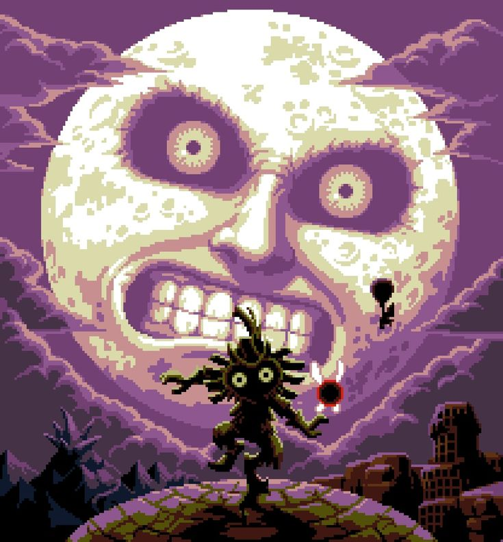
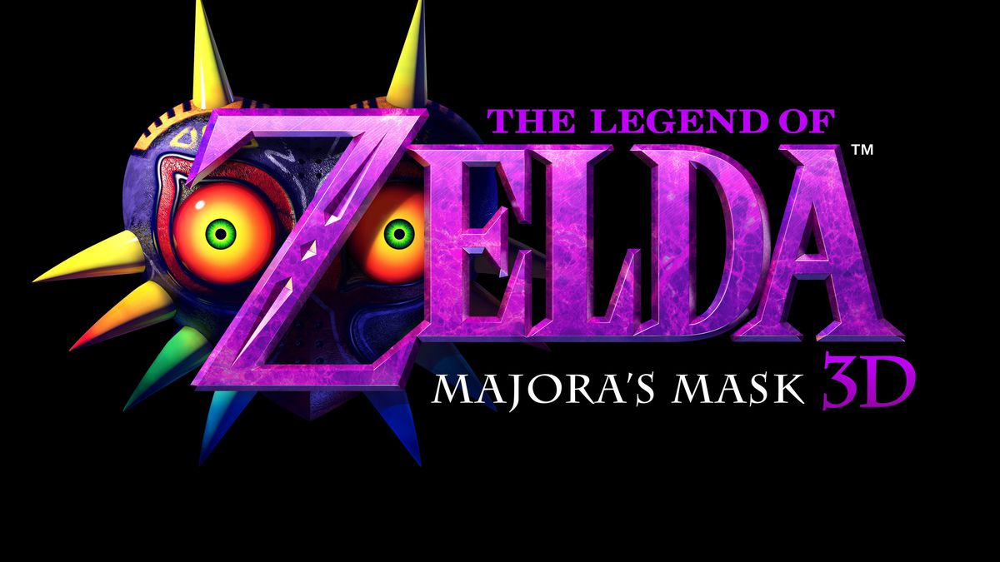

🎮 Introdução ao jogo
The Legend of Zelda: Majora’s Mask é a continuação de Ocarina of Time, trazendo uma nova aventura para Link. O jogo se destaca por seu mundo diferente, suas máscaras e pelo misterioso ciclo de três dias.
Feito por: Mayara
Vou contar como Zelda teve uma das suas mais perfeitas continuações
The Legend of Zelda: Majora’s Mask é a continuação de Ocarina of Time, trazendo uma nova aventura para Link. O jogo se destaca por seu mundo diferente, suas máscaras e pelo misterioso ciclo de três dias.
The Legend of Zelda: Majora’s Mask é uma continuação direta da jornada de Link em Ocarina of Time. Após derrotar Ganondorf, Link retorna à sua infância e parte em busca de sua antiga companheira, Navi. Durante essa jornada, ele encontra Skull Kid, que rouba sua Ocarina of Time e foge para uma terra desconhecida. Ao persegui-lo, Link chega a Termina, um mundo misterioso e diferente de Hyrule. O jogo foi desenvolvido utilizando elementos e recursos de Ocarina of Time, mas buscou criar uma experiência muito diferente, com uma atmosfera mais sombria e melancólica.

Em Termina, uma enorme Lua está destinada a cair sobre o mundo dentro de apenas três dias. Para impedir a destruição, Link precisa explorar diferentes regiões, descobrir o que está causando a catástrofe e ajudar os habitantes daquele mundo. Durante a aventura, ele encontra diversas máscaras, algumas capazes de transformá-lo em outras criaturas e conceder novas habilidades. Essas transformações são fundamentais para explorar determinadas áreas, superar desafios e enfrentar os perigos encontrados pelo caminho.
Três dias, uma Lua e uma jornada inesquecível para salvar Termina antes que o tempo chegue ao fim.
As máscaras são um dos elementos mais marcantes de Majora’s Mask e possuem diferentes funções durante a aventura. Algumas permitem que Link se transforme em outras criaturas, como um Deku Scrub, um Goron ou um Zora, cada uma com habilidades próprias que ajudam a explorar Termina e superar diferentes desafios. Outras máscaras podem ser utilizadas para interagir com personagens e descobrir novas possibilidades durante os ciclos de três dias. Entre elas, a Fierce Deity Mask se destaca por conceder a Link uma forma extremamente poderosa, utilizada principalmente em batalhas. Dessa forma, as máscaras não são apenas itens, mas fazem parte da própria identidade e progressão da aventura.
